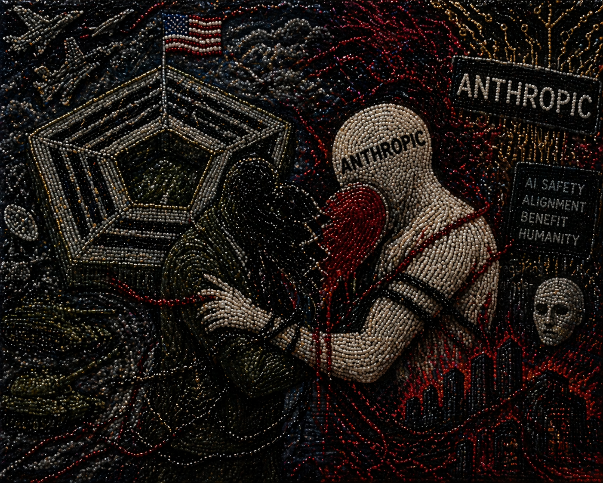
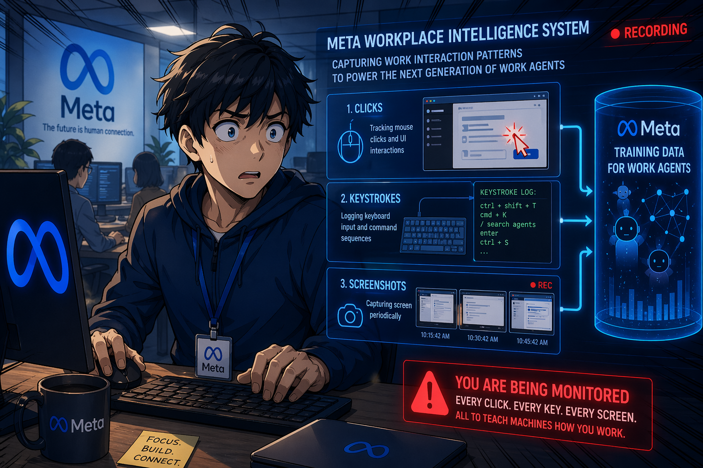
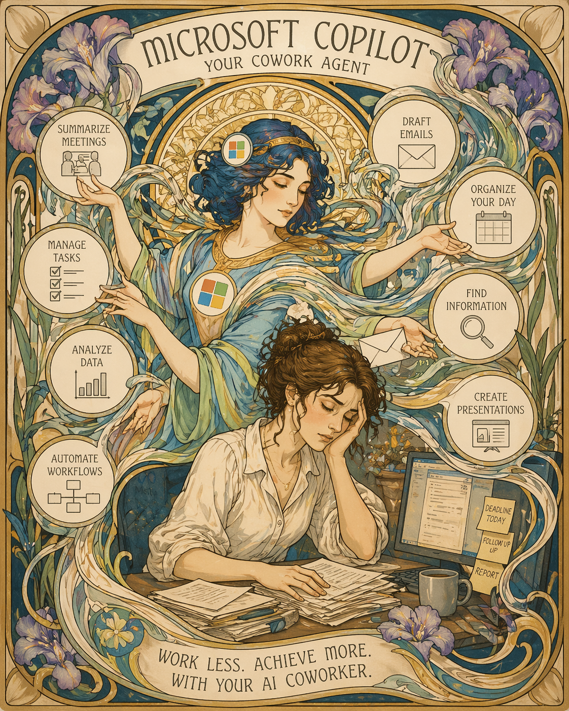
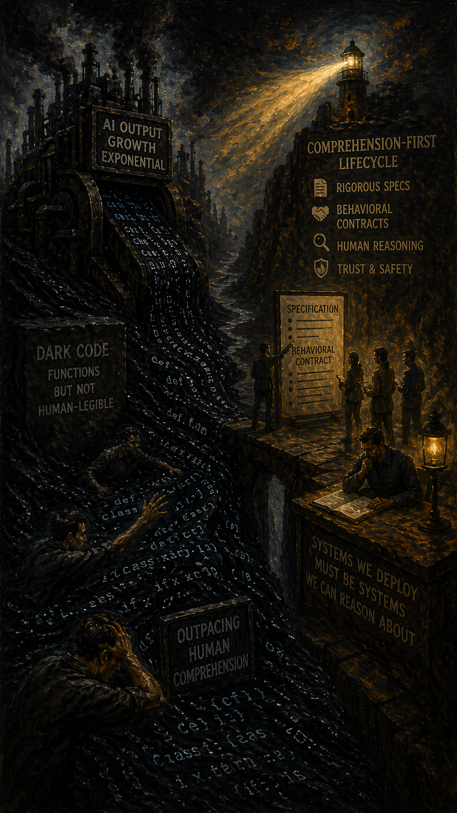
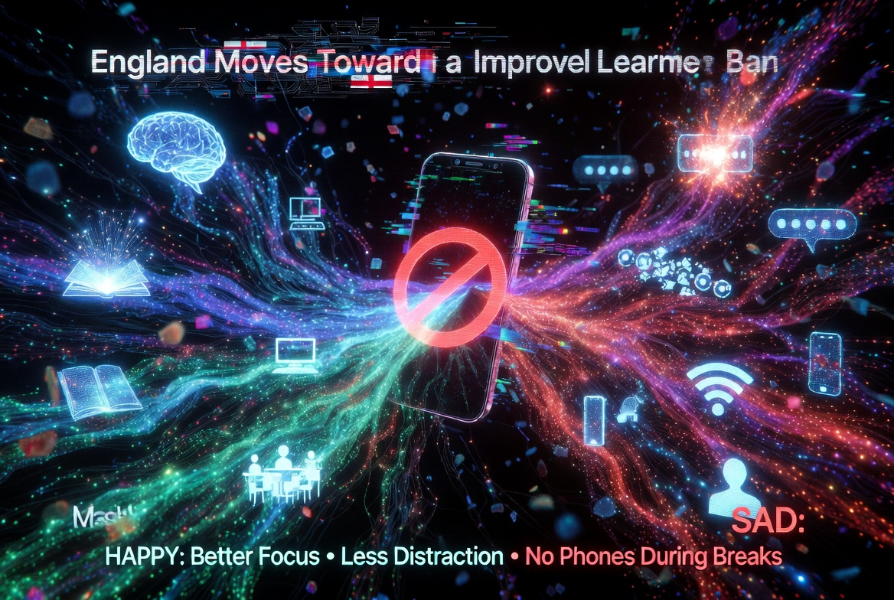
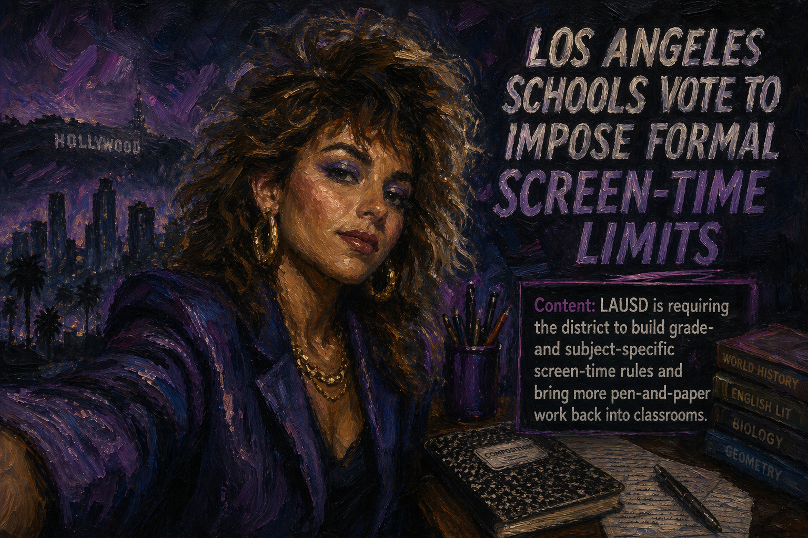

Artificial Insights
In This Issue

Meta rolls out Muse Spark as a fast reasoning model across its ecosystem
Meta’s new Muse Spark model is small and fast, but still focused on science, math, multimodal work, and autonomous task finishing. Since it's been a year since they have given us a new model, I think this signals a change. Now AI products are being rebuilt around being able to assign tasks themselves and really understand visuals.
Sources: about.fb.com ↗ · meta.ai ↗
The NSA is using Anthropic’s new model Mythos despite a Pentagon blacklist

The contradiction is hard to miss. One part of the U.S. national security apparatus is reportedly using Anthropic’s most advanced model while other defense officials have treated the company as a supply-chain risk. When a tool is considered too risky to trust and too capable to ignore. I guess that tells us a lot about where this race is headed.. the land of confusion.
Meta is capturing employee activity to train work-agent models

Reuters reports that Meta is deploying software on employee machines to record interaction patterns, including clicks, keystrokes, and periodic screenshots, to generate training data for work agents. Seldom is training your automated replacement done in such an overt manner. The lesson is that organizational context and data is becoming strategic fuel, and some companies are going to collect it with all the grace of a crow stealing jewelry.
Meta is building a realistic AI clone of Mark Zuckerberg
According to the Meta, they are training a 3D AI version of its CEO. They are focusing on mannerisms, voice, and recent takes on company strategy. The plan is that employees can chat with a synthetic Zuck internally. Zuckerberg is reportedly personally involved, and it is one of several AI characters in development. The online reaction has been, predictably, that talking to robot Zuck may actually be less awkward than talking to the real one.
Sources: nypost.com ↗ · youtu.be ↗
Pika is creating a self-video feature that lets anyone star in their own AI clips
Pika’s upcoming self-video workflow lets you drop yourself — or someone else — into polished AI-generated video. It is worth noting alongside the Meta/Zuck clone story above: photorealistic synthetic humans are not a Facebook problem, they are an industry trend. This technology has been attempted several times, so I'm not sure this will catch on. Do you really ever want to talk to somebody's clone?

🛠️ Copilot Co-work expands through Microsoft’s Frontier program

The News: Microsoft is rolling out access to Copilot Co-work, an agentic Copilot experience designed to coordinate multi-step work across apps. With this mostly autonomous system, Microsoft is attempting to remain relevant in the recent push for these agents. This is clearly indicating that Microsoft is going to move Copilot from assistant behavior toward workflow orchestration.
My Take: This is one of the more relevant developments for Microsoft-heavy organizations because it indicates that we are going to have agents that automate many things. Some examples will be processes that use multiple programs, and involve you entering data. For example, it should be able to go to Blackboard, get scores, put them on a spreadsheet using Excel on your computer,and then calculate values, before reporting back to you. Working with our own tools is more important than new flashy models.
🛠️ Granter wants to act like an AI grant consultant for the full funding lifecycle
The News: A new company (to me anyway) Granter positions itself as an embedded AI worker for grant discovery, eligibility checking, application drafting, and post-award compliance. Despite the fact that many grants specify that AI should not be used, it is pitching not just content generation but process ownership across the whole grant pipeline.
My Take: For schools, nonprofits, and public-sector teams, this is exactly the kind of vertical AI tooling worth watching. It is less glamorous than frontier model drama, but it speaks directly to repetitive, deadline-driven administrative work that burns real time. As I understand it, some grants specify no use of AI. However, similar to our AI Detection discussion last week, I contend that if done properly, nobody will be able to tell.
🛠️ Gemini folds NotebookLM in as a shared knowledge layer
The News: Google is tightening the loop between Gemini and NotebookLM by introducing notebooks as a persistent place to organize chats, files, and instructions. Instead of each Gemini session starting cold, a notebook acts as a context container the model can draw from across conversations, project notes, source documents, and standing instructions all live in one reusable place.
My Take: This is very cool, and worth playing around with. Pull all of your grading philosophies in one large Notebook, and pull that into gemini for a discussion on handling individual student issues. No longer will you need to answer the same questions over and over again. Major AI products are quietly becoming context containers, not chat windows. Once your notebooks, files, and instructions live alongside the model, starting every task with a fresh prompt starts to feel expensive. For teams and classrooms, the practical question is whether you should standardize a few shared notebooks now to include things like project briefs, style guides, and syllabus context.

🔬 Agentic output is scaling faster than team comprehension

The biggest story in this issue is not a single model launch. It is the widening gap between what AI systems can produce and what teams can quickly understand. The more capable these tools become at generating software, dashboards, workflows, and decisions, the more dangerous it becomes to treat the output alone as the primary artifact. That is how organizations drift into what's called dark code. Systems that are chained together from step-to-step-to-step and they do what we've asked of them, but the reasons for underlying decisions may be difficult to audit. The pattern shows up across the issue. Copilot Co-work pushes office software toward orchestrated task execution. Meta is reportedly trying to capture employee interaction data so work agents can learn how real work gets done. All of this increases throughput. None of it automatically increases understanding.

🎓 England moves toward a statutory school phone ban

England is moving from guidance to legal requirement on restricting phones in schools. The deeper point for educators is that this is part of a larger institutional push to reintroduce friction, attention, and boundaries into environments that have been overwhelmed by always-on devices. As AI tools become more ambient and more persuasive, schools are likely to become even more intentional about what forms of access are always allowed and which ones need structured limits. Think about AI glasses or an AI pencil and what information they have access to that was previously safe.
🎓 Los Angeles schools vote to impose formal screen-time limits

LAUSD is requiring the district to build grade- and subject-specific screen-time rules and bring more pen-and-paper work back into classrooms. For educators, this is not really an anti-technology story. It is a design story. Schools are realizing that more device time is not automatically better learning, and that measurable limits may be necessary when digital environments begin to dominate attention by default. Oh... and AI is on every mobile device, so exams are no longer an effective measure when everyone has an LLM.
🎓 AI may save effort while quietly weakening thinking habits
The BBC’s roundup on cognitive offloading is worth reading because it captures a tension many instructors already feel. AI can absolutely help students and professionals move faster, but speed is not the same thing as learning. When learners outsource too much recall, drafting, or reasoning to AI, the hidden cost may be weaker memory, lower ownership, and less durable thinking. That makes the teaching challenge sharper: use AI as a partner in thought, not as a substitute for it.
🎓 Prompt-generated persuasion and deepfakes are increasing into one media-literacy problem
The New York Times is reporting on AI-generated pro-Trump social accounts are growing at an astonishing rate in multiple social media platforms. One report from Alethea found that the tool being used for this is PromptPasta, which uses large language models to mass‑produce varied social media replies that all reinforce a shared narrative, rather than copy‑pasting identical text as in traditional copy paste. These AI-written comments appear organic, allowing the agent to manipulate conversations at scale before genuine users can shape the discussion. This level of sophistication, along with the lack of visible signs the users are AI, brings up an important issue for all of us. We all need to be evaluating not just whether content is biased, but whether the apparent speaker exists at all. We are in the era where a video of a real person may not have actually happened at all.
This is where synthetic text and synthetic video collapse into the same problem. Tools like Pika’s self-video feature (above) let anyone drop themselves... or anyone else... into polished AI-generated clips. Add to this the fact that Meta is building a clone of its own CEO. The conclusion? Once "the account posting this" and "the person on camera" are both plausibly fabricated, I'm not sure what we can trust anymore.
Media literacy now has to cover synthetic personas, repeated prompt-variants, manufactured consensus, and video that convincingly shows people doing things they never did. Teaching students to ask "who actually said this, and how would we verify it?"" is no longer paranoia. It is the baseline.

🎬 Testing Copilot Co-work inside the Microsoft office workflow
For a demo, Copilot Co-work makes a lot of sense. The real value is that the audience can immediately see the workflow story, and we can see it while using our own content in Microsoft 365. In testing, Co-work felt less like a better chatbot and more like a system trying to coordinate work across our work environment. I love that about Co-work. It is the start of what is being called task orchestration, and it's using tools we already use for email, documents, scheduling, and daily coordination. This has sooo much potential. I can't wait to see how it works.


💥 Drone delivery meets reality the hard way
The drone-delivery failure clip is funny at first glance, but it is also a clean reminder that AI failure in the physical world is not abstract. When autonomy leaves the screen and starts moving through real space, errors become kinetic, public, and a lot harder to shrug off as “just a glitch.” This is exactly why flashy autonomy demos should always be paired with questions about edge cases, safety constraints, recovery behavior, and who gets blamed when the system improvises badly.

Refine with the same model, then break it with another
Pick one AI-generated work item that you or your team trusts (a draft, learning plan, workflow, or report). First, run self-refinement using the same model. Self refinement: “Review your previous answer for technical inaccuracies or logical fallacies and provide a corrected version.” That pass catches obvious mistakes but often shares the same blind spots as the original. So second, switch to a different model for critique, and give that critique explicit directions and tactics so you get sharper pushback than a generic “what do you think?”
The Prompt:
"“You are not here to improve this xxxx. You are here to break it. Take one persona at a time: skeptical auditor, malicious user, rushed operator, and confused new team member. For each persona, identify one likely failure mode, what evidence would reveal it quickly, and one guardrail we can add now to prevent it. Be concrete, adversarial, and specific. Do not be polite.”"
Five practical next steps for an agentic workflow
- Rewrite one vague request as a spec with what a perfect result would look like.
- Practice an agentic tool like Copilot Co-work, or an Agent, but pause to identify where verification still matters.
- Keep one class or team activity intentionally high-friction so people still have to think.